I kept noticing the same friction point: in a kayak, on a bike, while traveling, or even during normal movement, the phone can hold exactly the information I need, but it is often the wrong device to keep handling in the moment.
← Back to Projects
BA Product
ActiView — your phone's essential info, outside the phone.
I started ActiView as a BA device idea for kayaking, biking, travel, and other active situations where the phone is useful, but awkward to handle every few seconds.
What exists today is real prototype work: Raspberry Pi setup, interface tests, phone-connected workflows, and physical display experiments that are already in motion.
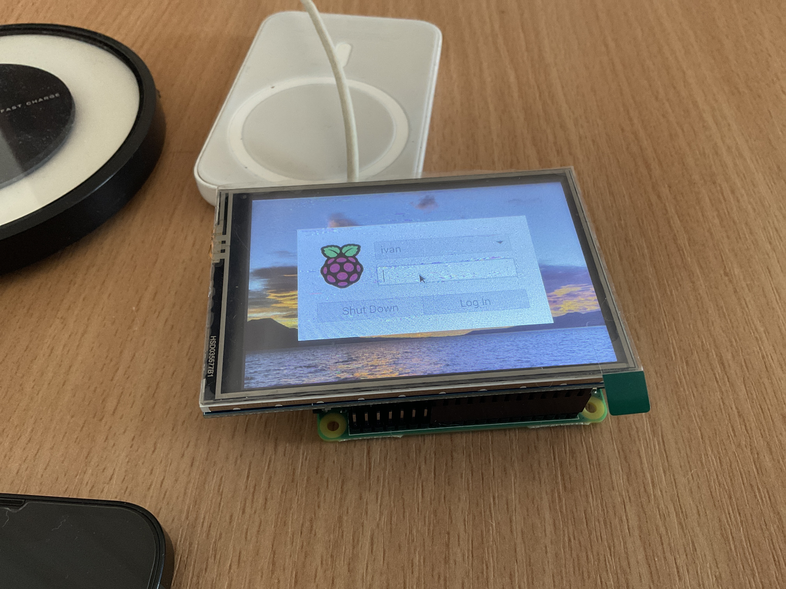
Problem
Phones are powerful, but active situations are not built around pulling one out every few seconds.
Maps, speed, coordinates, weather, music, and simple phone status should not require risking the phone itself. The phone may be in a pocket, bag, or waterproof place for good reason, but then the useful information disappears with it.
Solution
A small external smart screen for active situations.
My goal with ActiView is simple: keep the most important information visible on a compact dedicated screen while the phone stays protected.
I do not see it as a second phone. I see it as the part of the phone that should stay visible when the full phone should stay out of your hand.
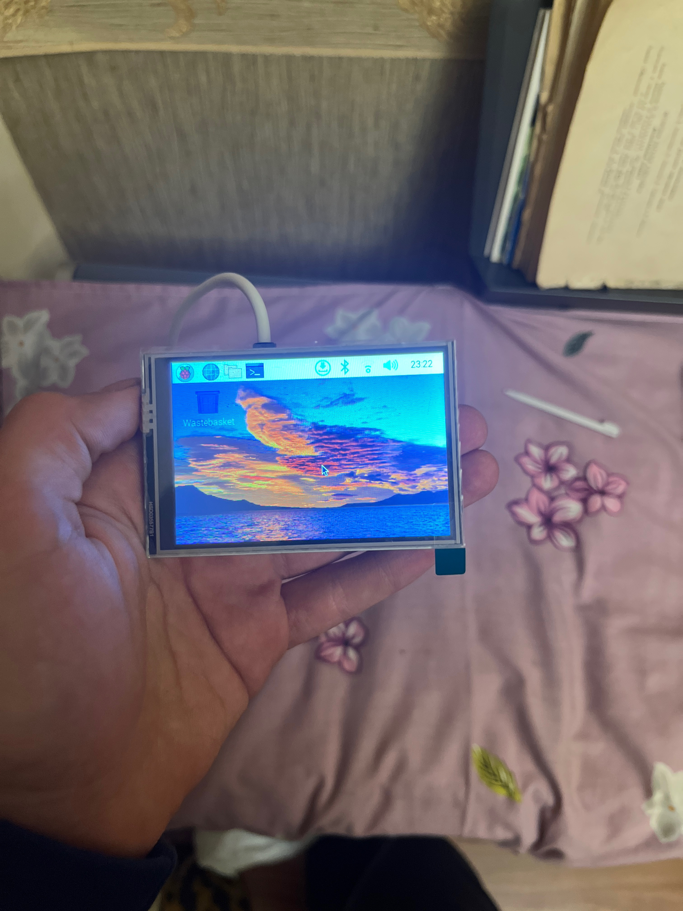
How It Works
ActiView is built around a phone connection, not around replacing the phone.
The phone stays the source. ActiView stays visible.
In the current prototype direction, the phone remains the source of live information and ActiView becomes the dedicated place to surface it. The exact connection layer is still part of the development process, but the direction is already clear: the phone carries the data, and ActiView makes the right part of it easier to see.
Phone-connected prototype flow
- Phone-based location and context are part of the workflow
- Raspberry Pi experiments drive the current device logic
- Interface output is being tested on a dedicated screen
- The goal is quick visibility without constant phone handling
A cleaner companion relationship
The longer-term idea is a companion device that feels stable, quick to glance at, and clearly connected to the phone without becoming another full-screen distraction.
Who It Is For
I keep coming back to situations where the phone matters, but should not be the thing I am actively handling.
Water, motion, and fast glances
Kayaking is one of the clearest use cases: the phone may need to stay protected, but location, speed, and route awareness still matter in the moment.
Speed and route visibility
On a bike, ActiView makes more sense as a quick companion view than repeatedly reaching for a larger device.
Navigation without the full phone ritual
While moving through unfamiliar places, seeing the essential information quickly can matter more than opening the full phone interface again and again.
Useful beyond one niche
The bigger point is not one sport. It is any situation where the phone holds the answer, but a smaller companion screen would be a better surface for the moment.
Features
Focused information, shaped for movement instead of phone handling.
Live map and GPS position
Quick visibility for location and orientation without digging for the phone.
Speed display
A clean readout for movement-based situations where speed matters at a glance.
Coordinates
Useful location details for navigation, exploration, and route awareness.
Music screen
Basic track information stays visible without forcing the phone into your hand.
Phone status
Important connected-device information can stay accessible on the companion screen.
Weather screen
Helpful conditions and forecast context for movement, travel, and outdoor use.
Compact active-use design
Built around the idea of a small device that fits active situations better than a full phone.
Phone-connected by design
The device depends on the phone, but keeps the right information visible at the right time.
Built through real experiments
This direction already exists in hardware tests, interface work, and repeated prototype iteration.
Product Story
ActiView is a real BA device project, built through experiments instead of imagined from a distance.
ActiView did not start as a polished render. It started as a real irritation and moved into Raspberry Pi setup, display tests, software experiments, phone workflows, physical prototypes, and Shapr3D case modeling.
That matters to me. I want this page to show that ActiView is not just an idea I can describe. It is something I have already been trying to make tangible.
BA approach
Notice the problem. Build the rough version. Make it more honest from there.
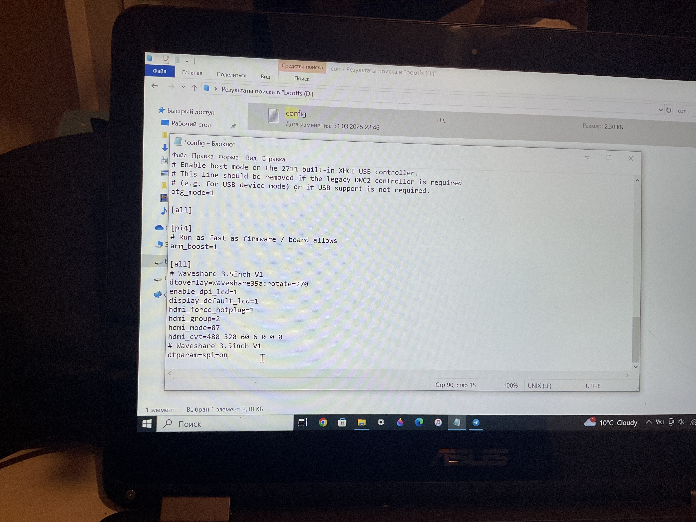
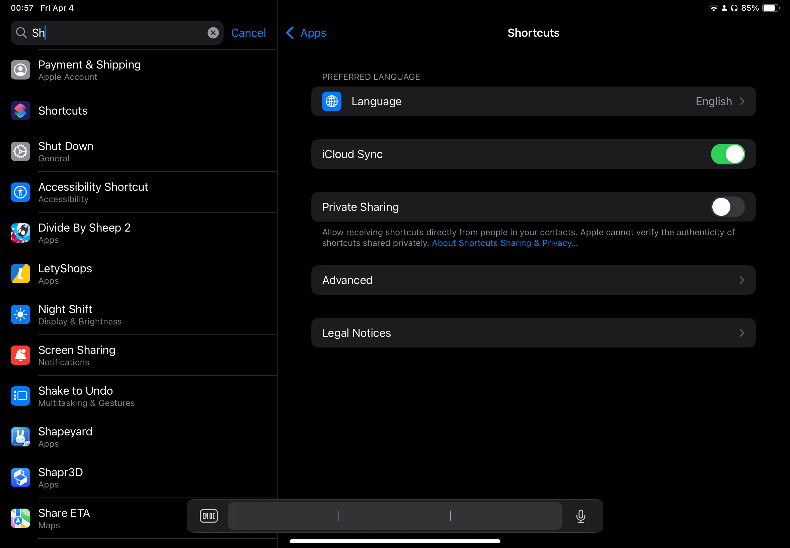
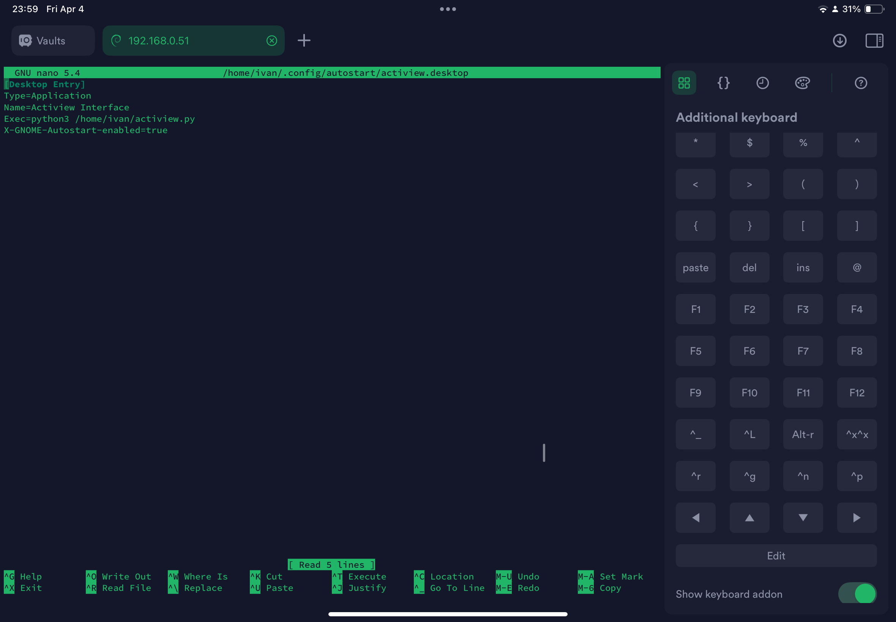
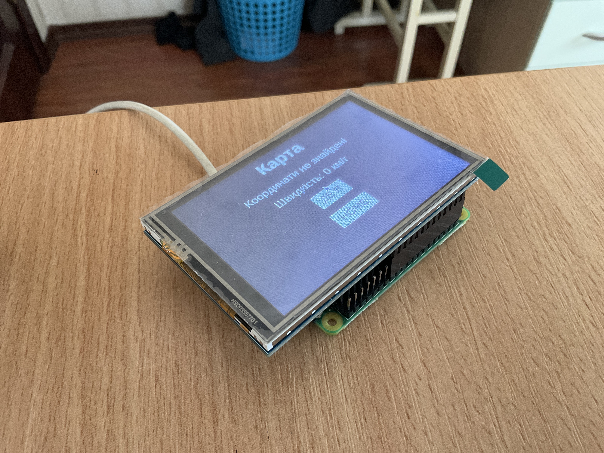
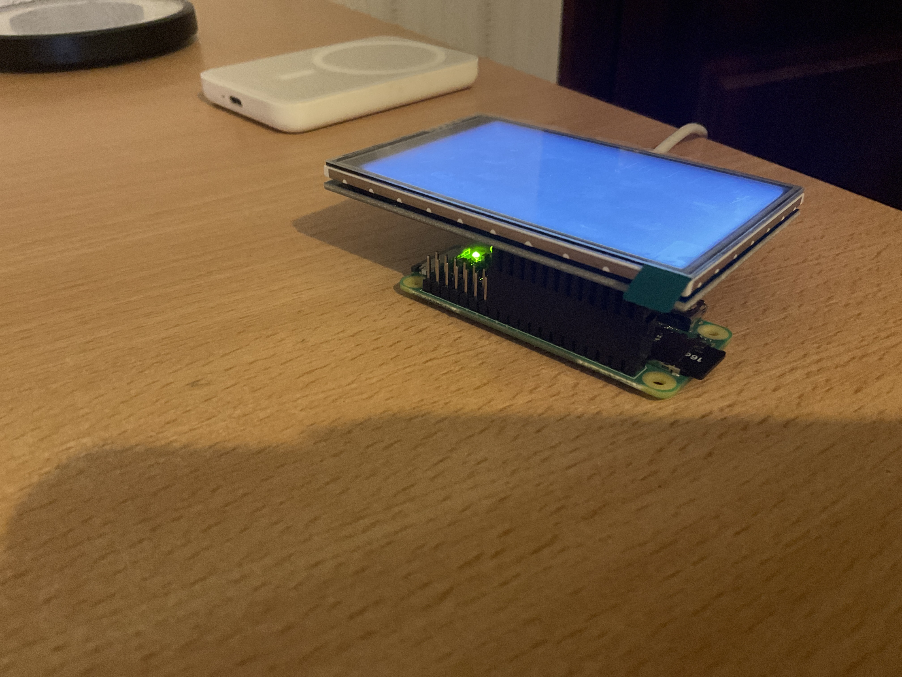
Case Design
ActiView also has real case iterations, modeled as STL files in Shapr3D.
These models show the physical product direction moving beyond an exposed screen and Raspberry Pi setup. They are working case experiments, not final manufacturing specs.
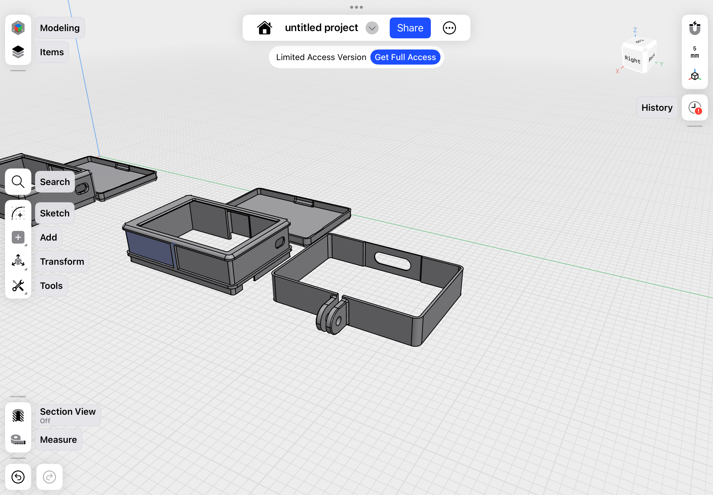
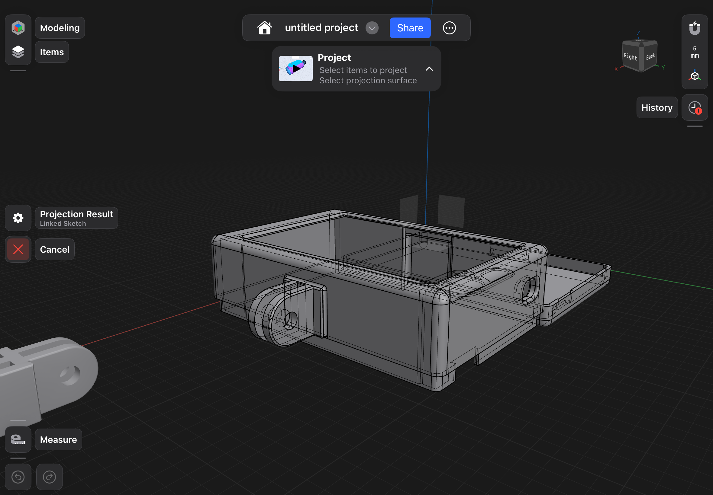
 01
01
First case model
Download STL
ActiView case
The first saved STL case direction for moving the prototype toward a more enclosed physical form.
 02
02
Iteration
Download STL
ActiView case v2
A second case version from the same modeling process, testing how the device body could evolve.
 03
03
Iteration
Download STL
ActiView case v3
A later STL model showing continued shape exploration around the screen and case structure.
 04
04
Iteration
Download STL
ActiView case v4
A fourth version in the case sequence, keeping the focus on physical fit and product feel.
 05
05
Iteration
Download STL
ActiView case v5
An additional enclosure experiment, continuing the move from bare prototype toward device design.
 06
06
Latest saved model
Download STL
ActiView case v6
The newest STL file in this case set, ready to be expanded as the physical design gets sharper.
Gallery
A development archive of prototypes, interface experiments, and physical iterations.
A selected look into the broader ActiView archive, from hardware bring-up to interface and connection testing.

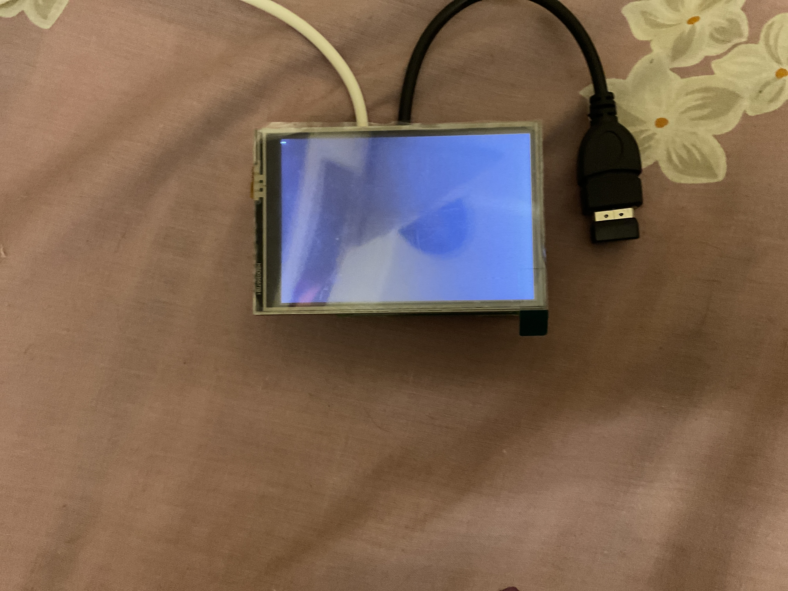
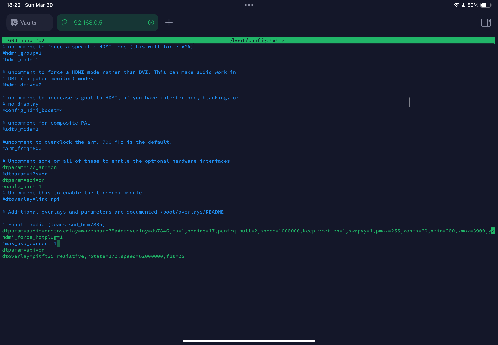
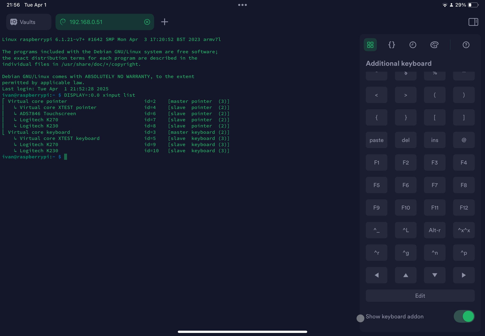
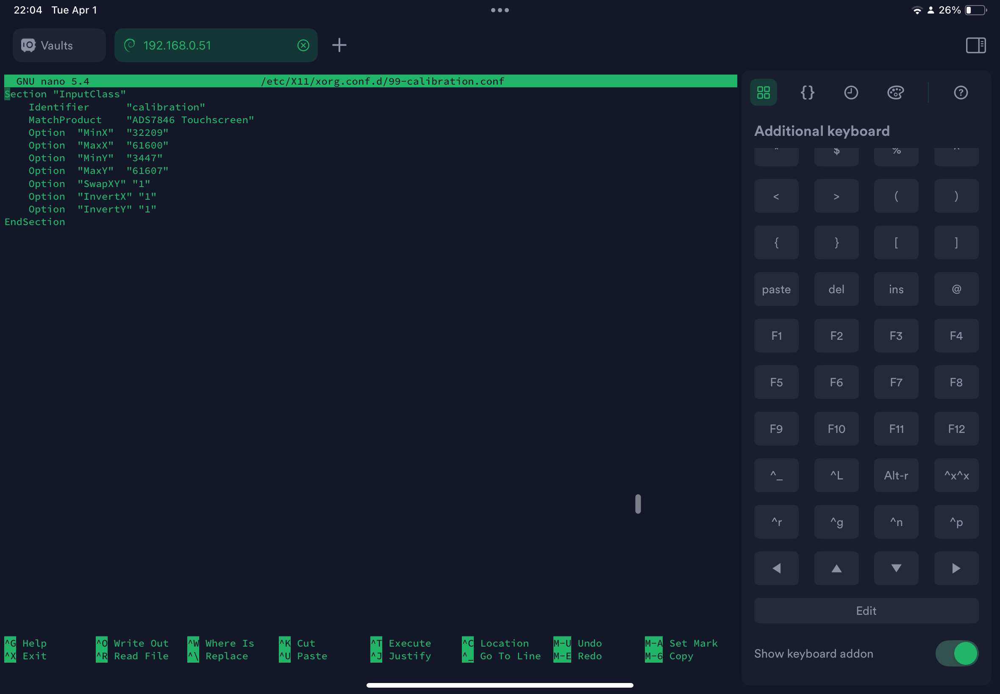
Vision
"ActiView is not here to replace the phone. It is here to make the phone more useful when the phone itself is not convenient."
ActiView fits into my larger BA vision of creating devices that make technology more personal and more practical instead of simply adding another screen for the sake of it.
Current Status
Real development work, still in prototype stage.
ActiView is still a prototype direction, but it is already grounded in real experiments instead of vague product language.
Work already underway
- Physical display prototypes
- Raspberry Pi experiments
- Phone-connected workflows
- Interface testing and iteration
- Shapr3D case models and STL iterations
- Hardware exploration and refinement
Still honest about the stage
ActiView is not being presented here as a finished product or a final spec sheet. It is a serious prototype direction that is still being developed.
Roadmap
The next goal is not more hype. It is a sharper, more believable device.
Make the device feel more product-like
I want the next iterations to improve interface clarity, device stability, the companion workflow, and the overall feeling that this is becoming a coherent product.
Stay focused on real scenarios
Kayaking, biking, travel, and active movement remain the best way to test whether the product direction is actually useful or only interesting in theory.
A BA companion device that earns its place beside the phone.
The future version of ActiView should feel like a clear, practical companion: a device you can trust for essential information, without asking it to become another general-purpose screen.
Next
Follow where ActiView goes next.
Explore BA, review the gallery, or reach out if you want to talk about the product direction.